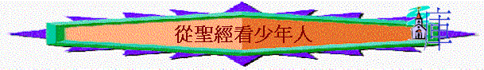

一．少年人/孩童的特性:
[箴 1:4]: 使愚人靈明，使少年人有知識和謀略，
[箴 20:29]: 強壯乃少年人的榮耀；白髮為老年人的尊榮。
[箴 20:11]: 孩童的動作是清潔，是正直，都顯明他的本性。
[加 4:3]：我們為孩童的時候，受管於世俗小學之下，也是如此。
[弗 4:14]: 使我們不再作小孩子，中了人的詭計和欺騙的法術，被一切異教之風搖動，飄來飄去，就隨從各樣的異端；
[林前 13:11]: 我作孩子的時候，話語像孩子，心思像孩子，意念像孩子，既成了人，就把孩子的事丟棄了。
[提後 2:22]: 你要逃避少年的私慾，同那清心禱告主的人追求公義、信德、仁愛、和平。
我實在告訴你們，凡要承受神國的，若不像小孩子，斷不能進去。」
[來 5:12-來 5:13]
[12]看你們學習的工夫，本該作師傅，誰知還得有人將神聖言小學的開端另教導你們，並且成了那必須吃奶，不能吃乾糧的人。
[13]凡只能吃奶的都不熟練仁義的道理，因為他是嬰孩；
綜合：１．肉身上：
∼強壯
∼易受情慾影響
２．心智上
∼易無知
∼難分辨是非，未熟練仁義的道理
∼易中計
∼但單純，心較清潔
二．不好的榜樣：
[箴 7:7]: 見愚蒙人內，少年人中，分明有一個無知的少年人，
[箴 7:13]: 拉住那少年人，與他親嘴，臉無羞恥對他說：
[箴 7:22]: 少年人立刻跟隨他，好像牛往宰殺之地，又像愚昧人帶鎖鍊去受刑罰，
[王上 14:24]: 國中也有孌童。猶大人效法耶和華在以色列人面前所趕出的外邦人，行一切可憎惡的事。
[王下 2:23]: 以利沙從那裡上伯特利去，正上去的時候，有些童子從城裡出來，戲笑他說：「禿頭的上去吧！禿頭的上去吧！」
綜合：ˍˍˍˍˍˍˍˍˍˍˍˍˍˍˍˍˍˍˍˍˍˍˍˍˍˍˍˍˍ
三．美好的典範
[創 22:5-創 22:7]
[5]亞伯拉罕對他的僕人說：「你們和驢在此等候，我與童子往那裡去拜一拜，就回到你們這裡來。」
[6]亞伯拉罕把燔祭的柴放在他兒子以撒身上，自己手裡拿著火與刀；於是二人同行。
[7]以撒對他父親亞伯拉罕說：「父親哪！」亞伯拉罕說：「我兒，我在這裡。」以撒說：「請看，火與柴都有了，但燔祭的羊羔在那裡呢？」
[撒上 3:1-撒上 3:3]
[1]童子撒母耳在以利面前事奉耶和華。當那些日子，耶和華的言語稀少，不常有默示。
[但 1:8]：但以理卻立志不以王的膳和王所飲的酒玷污自己，所以求太監長容他不玷污自己。
[路 2:40]: 孩子漸漸長大，強健起來，充滿智慧，又有神的恩在他身上。
[約壹 2:14]: 父老啊，我曾寫信給你們，因為，你們認識那從起初原有的。少年人哪，我曾寫信給你們；因為，你們剛強，神的道常存在你們心裡；你們也勝了那惡者。
綜合：ˍˍˍˍˍˍˍˍˍˍˍˍˍˍˍˍˍˍˍˍˍˍˍˍˍˍˍˍˍˍˍˍ
四．教導的方式與內容：
[詩 119:9]: 少年人用什麼潔淨他的行為呢？是要遵行你的話！
[詩 148:12]: 少年人和處女，老年人和孩童，都當讚美耶和華！
[箴 1:4]: 使愚人靈明，使少年人有知識和謀略，
[箴 22:6]: 教養孩童，使他走當行的道，就是到老他也不偏離。
[箴 22:15]: 愚蒙迷住孩童的心，用管教的杖可以遠遠趕除。
[箴 23:13]: 不可不管教孩童；你用杖打他，他必不至於死。
[箴 29:15]: 杖打和責備能加增智慧；放縱的兒子使母親羞愧。
[傳 4:13]: 貧窮而有智慧的少年人勝過年老不肯納諫的愚昧王。
[加 4:3]: 我們為孩童的時候，受管於世俗小學之下，也是如此。
[弗 6:1]: 你們作兒女的，要在主裡聽從父母，這是理所當然的。
[弗 6:4]: 你們作父親的，不要惹兒女的氣，只要照著主的教訓和警戒養育他們。
[西 3:20]: 你們作兒女的，要凡事聽從父母，因為這是主所喜悅的。
[西 3:21]: 你們作父親的，不要惹兒女的氣，恐怕他們失了志氣。
[提前 5:1]: 不可嚴責老年人，只要勸他如同父親；勸少年人如同弟兄；
[提後 2:22]: 你要逃避少年的私慾，同那清心禱告主的人追求公義、信德、仁愛、和平。
[多 2:6]: 又勸少年人要謹守。
[13]也使他們未曾曉得這律法的兒女得以聽見，學習敬畏耶和華你們的神，在你們過約但河要得為業之地，存活的日子，常常這樣行。」
[約壹 2:14-約壹 2:15]
[14]父老啊，我曾寫信給你們，因為，你們認識那從起初原有的。少年人哪，我曾寫信給你們；因為，你們剛強，神的道常存在你們心裡；你們也勝了那惡者。
[15]不要愛世界和世界上的事。人若愛世界，愛父的心就不在他裡面了。
[來 6:1－2]：所以，我們應當離開基督道理的開端，竭力進到完全的地步，不必再立根基，就如那懊悔死行，信靠神、各樣洗禮、按手之禮、死人復活，以及永遠審判各等教訓。
[弗 4:13-弗 4:14]
[13]直等到我們眾人在真道上同歸於一，認識神的兒子，得以長大成人，滿有基督長成的身量，
[14]使我們不再作小孩子，中了人的詭計和欺騙的法術，被一切異教之風搖動，飄來飄去，就隨從各樣的異端；
綜合：
１．教導他們主的吩咐，遵行主的道
２．教導他們謹守
３．教導基督道理的開端：就如那懊悔死行，信靠神、各樣洗禮（信仰的堅信與委 身、按手之禮（關乎事奉，恩賜）、死人復活，以及永遠審判各等教訓。
４．認識神的兒子
５．不斷提醒
６．不滅他們的志氣
７．教導他們敬畏耶和華，做一個有智慧的人
８．學習讚美耶和華
９．其他．．．．